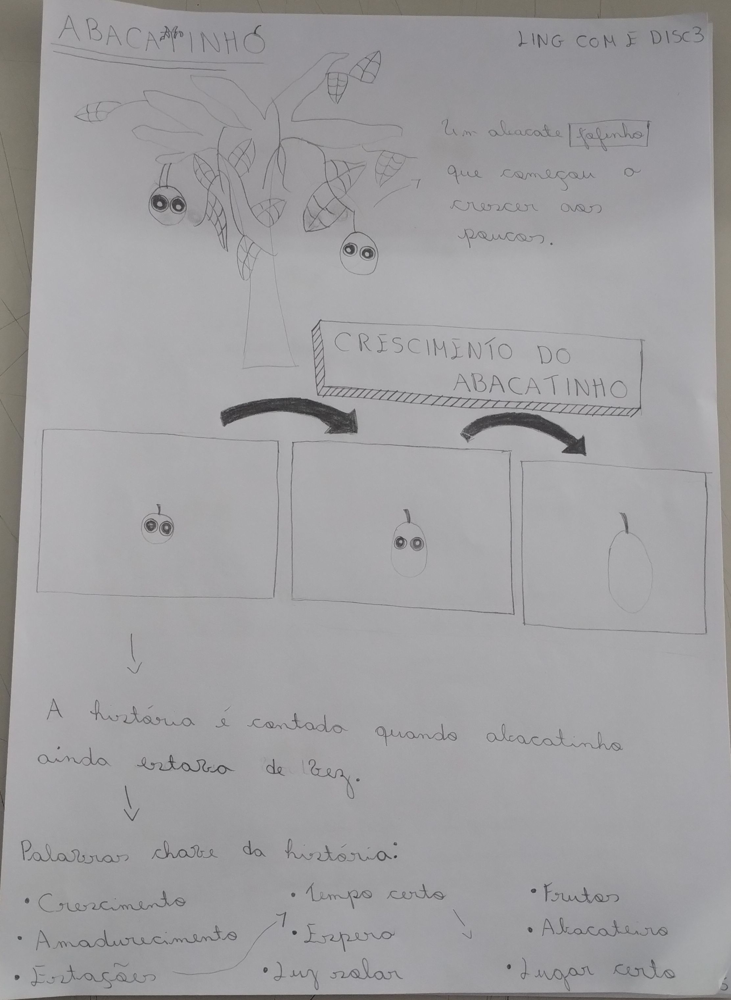
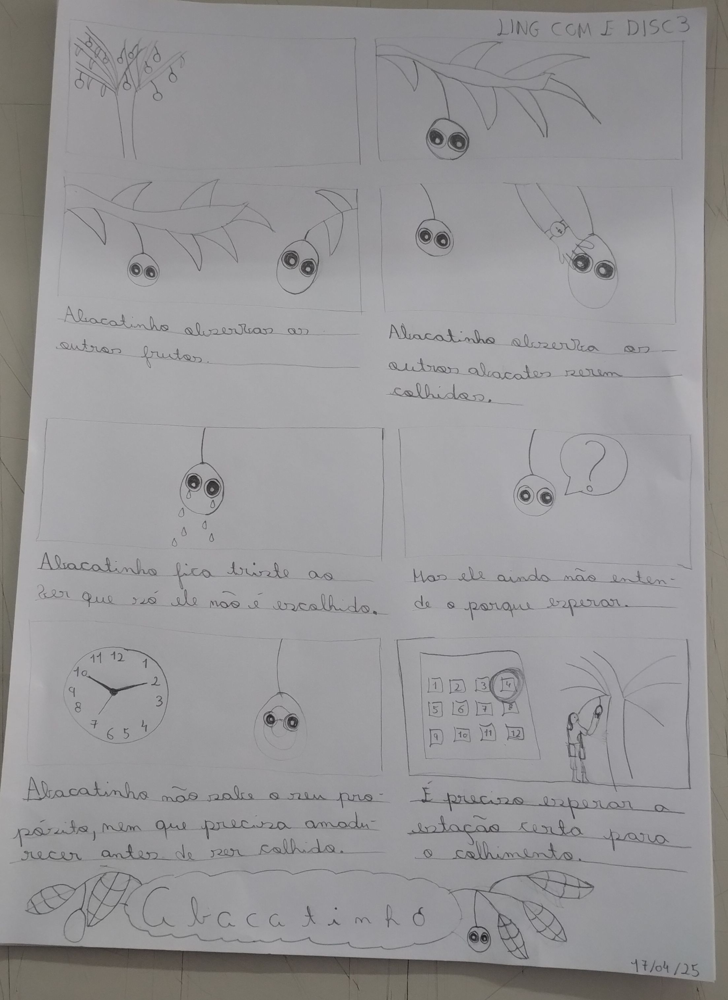

Kamishibai
A ideia nasceu de uma simples fruta — o abacate. Daí um rascunhei o personagem e seu storyboard.
A ideia da descrição é apresentar o crescimento da fruta com metáforas.
Abacatinho é uma história infantil que explora temas de paciência, crescimento e descoberta.

Ficha · ConceitoApresentação do personagem e diagrama de crescimento — da sementinha ao abacate maduro.

Storyboard · NarrativaSequência de cenas: Abacatinho observa os outros frutos serem colhidos, sente tristeza, e aprende que é preciso esperar a estação certa.